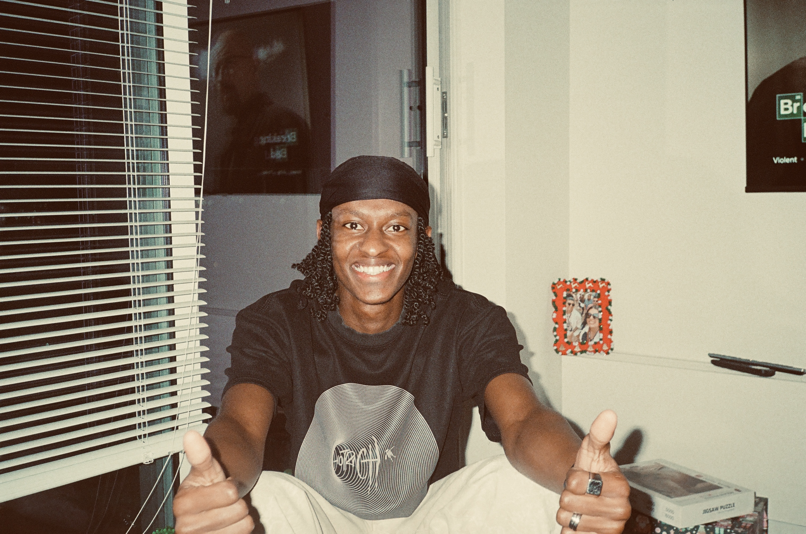

Based in Vancouver, BC
2
PROJECTS COMPLETED
JAN 2027 CO-OP AVAILABLE
I got into tech because I believe software fixes real world
problems. Not just apps, the kind of systems that make cities work.
Software that tells a SkyTrain when to open & close its doors, helps
companies run more efficiently, and automates the things that slow
communities down.
I care about building things that actually work for people.
Clean, intentional, purposeful! From the interface down to the
infrastructure.

Skills & tools
ShiftLog is a shift tracking and savings projection tool I built while working two jobs through school. I was manually calculating my hours in my head or calculator , so I needed something that would tell me exactly when I'd hit my financial goals at my current pace. It logs your shifts, calculates take home pay after tax, and projects your savings target date. Started as a Python script and evolved into a full web application over six months of real use.
DocFlow is a document management platform built to solve a real problem. Many organizations still run HR operations on paper, making retrieval slow and search impossible. It lets HR teams upload scanned contracts and employee records, runs server side OCR to extract the text, and stores everything in a PostgreSQL database with full text search. Built with role based JWT authentication so admins and employees see different views of the same system.